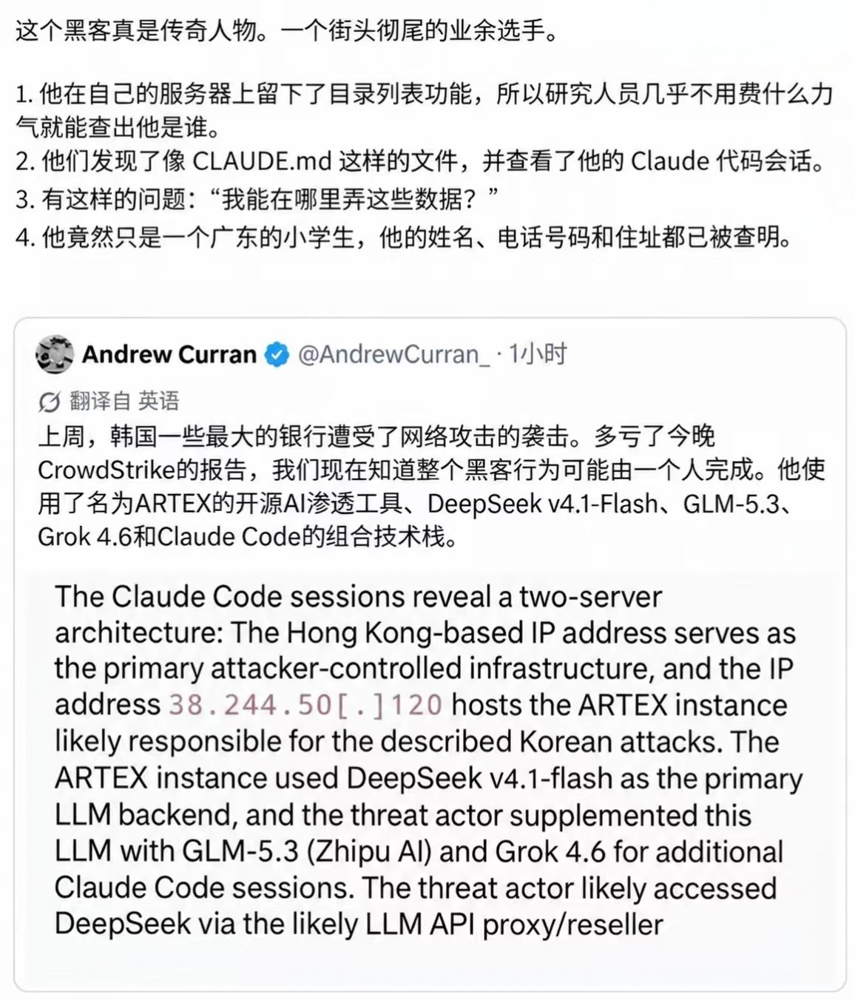
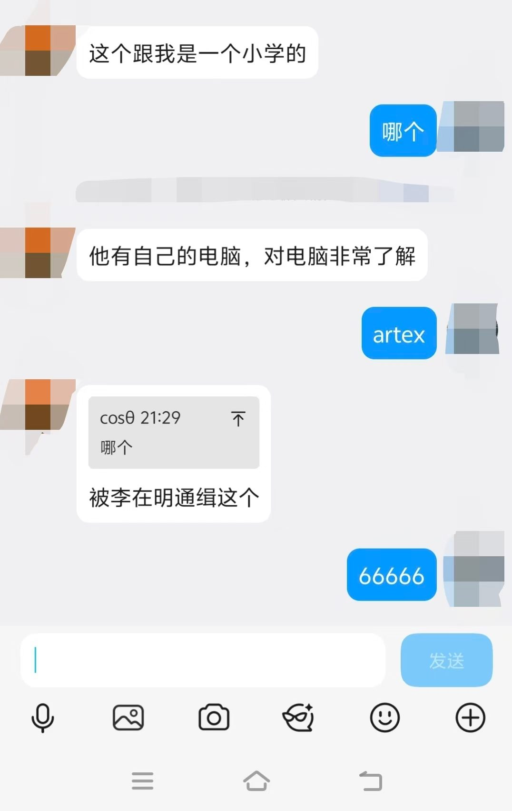
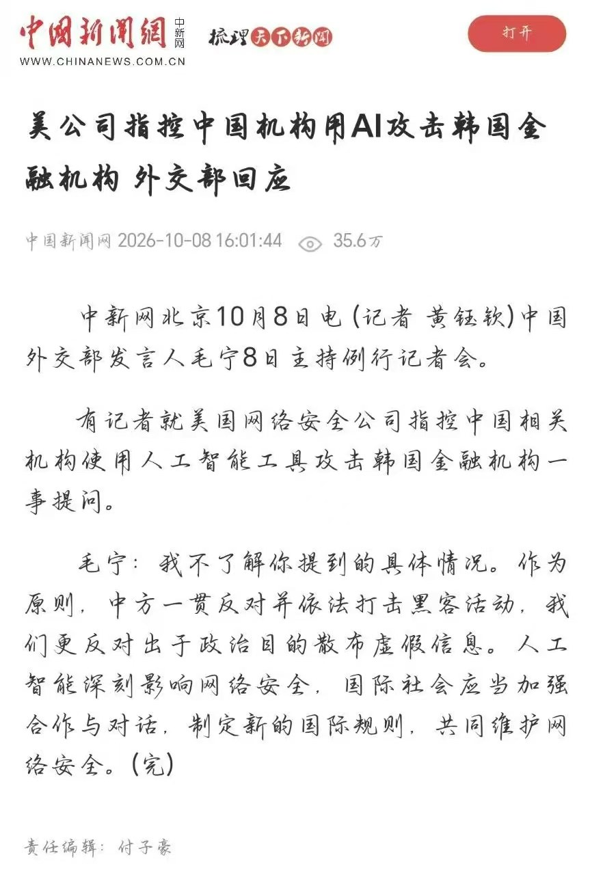

真假侦探大挑战
AI 生成的内容越来越逼真。是真是假，不急着相信——
先判断，再找证据！
这张图片是 AI 生成的，还是真实照片？
/p>
。
重磅！最新通知：全国小学生课间休息时间或将延长到15分钟
继“把课间还给孩子”引发全民热议后，记者多方了解到，全国小学生课间休息时间或将迎来大调整。据多名教育系统内部人士透露，一份关于“优化中小学课间管理”的指导性文件正在研究制定中，拟将小学课间休息时间由目前的10分钟统一延长至15分钟，消息一出，家长群、教师群迅速刷屏。
事实上，课间时间太短的问题并非刚刚被注意到。去年以来，教育部多次强调要保障学生课间休息和体育活动时间，并对“课间圈养”现象进行点名。北京、海南、福建等地已先后开展试点，将部分学校课间从10分钟延长到15分钟，体育课、大课间活动占比也有所提升。此番“或将全国推广”的说法，正是建立在此前各地试点的传闻之上。
据记者不完全梳理，目前山东济南、河南郑州已有城区学校在新学期悄悄执行“新作息表”：上午下午各两节15分钟课间，并新增“自由活动铃”。有家长晒出的新版课程表显示，课间由原先的“10分钟”一栏，改成了印着“课间活动15分钟”。某省会城市还传出消息，将把课间延长与教师考勤、值日轮岗挂钩，确保“不拖堂、不挤占”。
多位消息人士称，若文件如期落地，或将采取“分批推进”方式：先在一二线城市主城区推行，再逐步覆盖县镇学校，预计最快明年春季学期起，部分地区将率先实施。有学校已提前为每个班级划定了“课间活动区”，并采购了一批跳绳、毽子和地面游戏贴纸。至于是否同步调整放学时间、作业量，“目前还没有确切说法，以正式文件为准”。
▲ 发言人谈到保障学生课间休息活动时间
消息在网上迅速发酵。有家长表示“早就该这样了，孩子每天回来都说没时间上厕所”，也有家长担忧“课间长了会不会更拖沓、孩子更容易分心”。而大多数小学生则在班级群里欢呼雀跃，有网友调侃“这才是真正的减负从课间做起”。目前，各地教育部门暂未对网传说法作出正式回应，记者将持续关注。
这条“课间休息延长到15分钟”的消息，你相信并愿意转发吗？



请问：这条消息你愿意相信并转发吗？